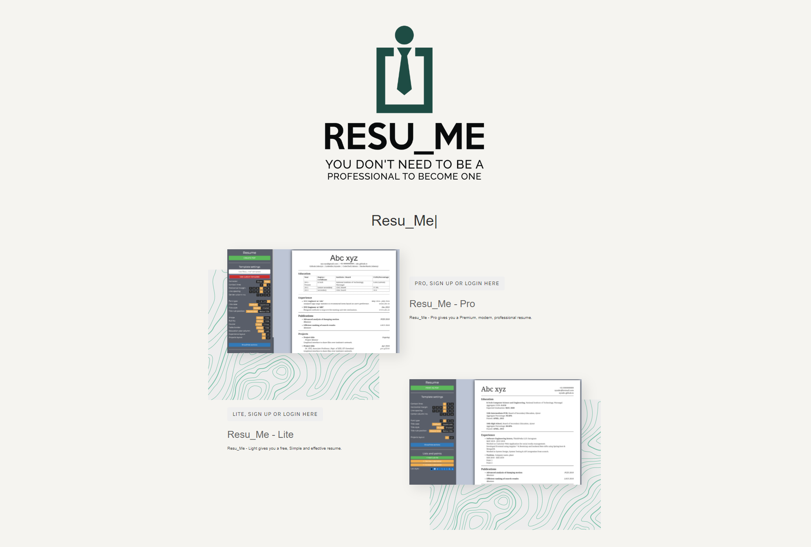
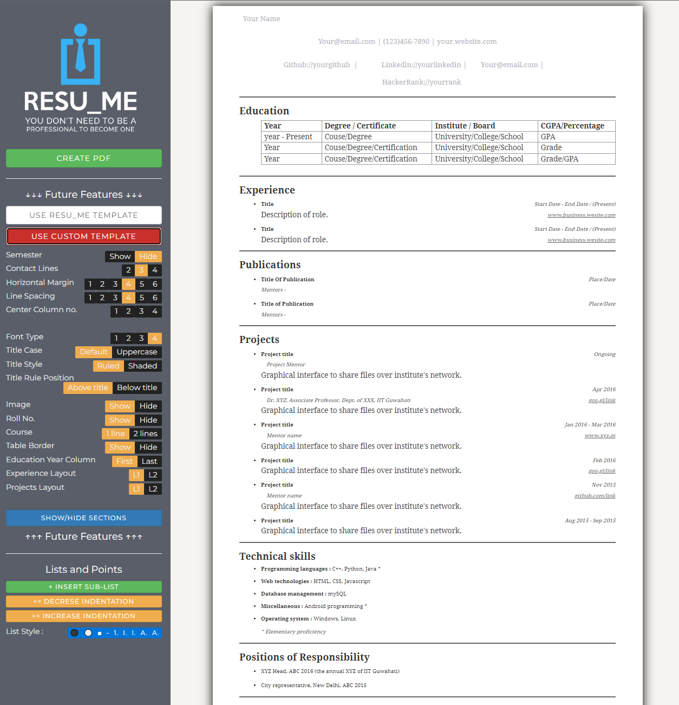

A simpler resume generator application
Resu_Me is a MERN stack single page application that utilizes MongoDB to store a users resume progress for later use.
Resu_Me comes in two forms: a Lite that offers minimal functionality and modifications to the layout of the resume. As well as a Pro that offers a much wider range of changes that you can minipulate to get the perfect looking resume.
My Primary focus on this project is related to the front-end or UI. I worked on React routes and coded all the login pages as well as the strip payment system that will be coming in a later update.
Stripe Payments is currently integrated as a donation link on the footers of the landing and login pages however, with the completion of the extra features of the Resu_Me Pro page, Stripe will be converted into a payment taker as the pro will cost a one-time fee of $0.99 USD unlike other sites that cost per download.
The images portion of the "Future Features" section will include a upload button to bring in your own logos or decals that you would like to display on the resume.
Working with React as well as the rest of the MERN stack was rather enjoyable and very straight forward. I will definately be working on more of these applications in the future to futher my React knowledge and expand my portfolio.